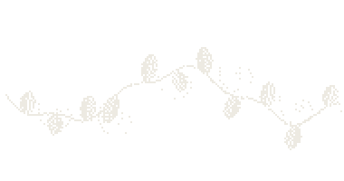
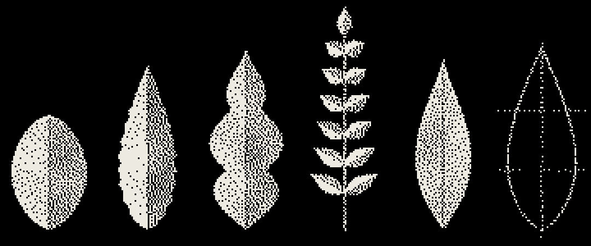
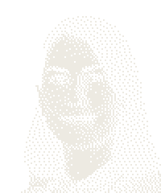
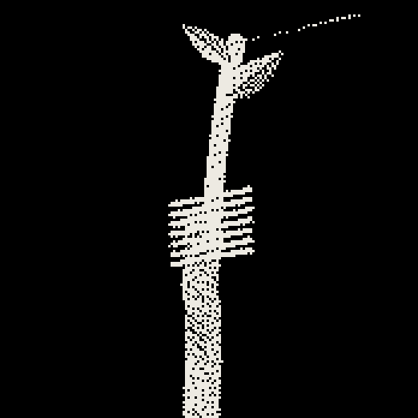
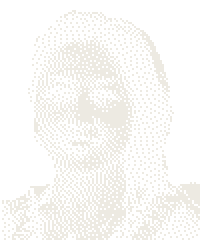
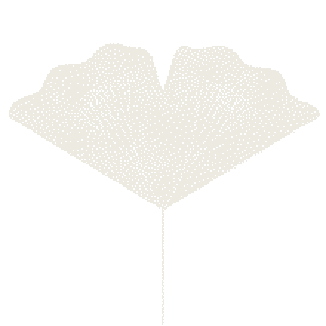
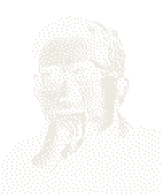
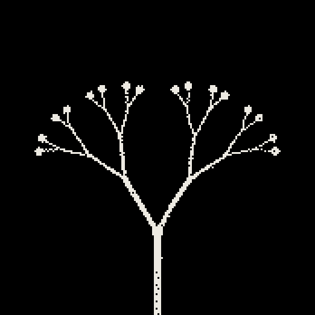

TUE 13 OCT · 第一天
Questions Concerning Theory
人机交互中的理论问题

01/04 TUE 13 OCT · 13:00–14:50 · HALL A 开幕与主旨演讲 周秋实 · Kasper Hornbæk · 赵盛东 · 麻晓娟 活动主题：理论作为 HCI 的器官/工具
10月13日至14日，周秋实在香港科技大学（广州）举办了“Theory as Organon”（以理论为器官/工具）研讨会，探讨了理论在人机交互（HCI）中的基础性作用。本次研讨会在粤港澳大湾区召开，旨在推动该地区 HCI 研究中有关理论建构的交流与对话。
活动名称追溯了清晰的认识论脉络：
亚里士多德的《工具论》（Organon）： 将形式逻辑确立为获取知识的核心工具。
培根的《新工具》（Novum Organum）： 用实证实验取代古典逻辑，作为科学探索的标准工具。
HCI 的“以理论为工具/器官”（Theory as Organon）： 由于 HCI 研究的是技术工具，因此理论自身必须作为分析、建模和批判这些工具的核心工具（organon）。
在开幕致辞中，周秋实引用了哲学家丹尼特（Daniel Dennett）的观点：不存在没有哲学的科学，只有哲学行李未经审查的科学。周秋实还质疑了将波普尔的可证伪性作为科学有效性唯一标准的传统观念。
结合唐·伊德（Don Ihde）的仪器现实主义（instrumental realism），周秋实提出，测量与技术工具决定了什么能够被观察到以及研究者如何将现象概念化。由于 HCI 正在主动设计和工程化介导人类思维的技术工具，该学科同传统自然科学一样，需要深刻的理论自我审视。
主旨演讲：核心理论视角
"抽象之舞" (The Dance of Abstractions)
Kasper Hornbæk（哥本哈根大学）探讨了 HCI 中关于个案（particulars，如具体用户、特定情境）与泛化（generalizations，如抽象模型、通用原则、形式化理论）之间的核心方法论张力。
个案的“仓鼠轮”（The Hamster Wheel of Particulars）： 优先考虑孤立的探索性研究会将该学科困在无止境的循环中。由于新设备和软件范式层出不穷，研究者对每一次发布的新技术都发起重复的、自下而上的归纳研究，产生碎片化且短命的见解，无法积累出持久的知识。
无生机的泛化（Lifeless Generalizations）： 反之，脱离设计情境的高层抽象同样对学科无益。例如，技术接受模型（TAM）虽然在数千项研究中得到了验证，但在实践中依然缺乏生机——剥离了用户动机、具体设计细节和社会情境。
HCI 研究的核心在于调控个案与泛化间的转换（“通道”）。
"心灵方程" (Equations of the Mind)
赵盛东（Shengdong Zhao，香港城市大学）倡导建立精炼且可解释的人类认知与行为数学模型，展示了简洁的方程如何捕捉复杂的交互现象并提供可靠预测能力。
交互阶段 / 认知现象 → 数学模型 / 方程框架
选择与目标筛选
希克-海曼定律 (Hick-Hyman Law) T = a + b · log2 (n + 1)
T: Reaction time · n: Number of equal options · log2 (n+1): Decision entropy
将 n 个选项的选择决定时间建模为对数函数：log2(n+1)。
信息整合与推断
贝叶斯推断与多感官加权 (Bayesian Inference & Multi-Sensory Weighting) Scombined = wV SV + wH SH , wi = (1/σi 2 ) / Σ(1/σk 2 )
Si : Signal estimates · σi 2 : Signal variance/uncertainty
将先验期望与感官输入相结合，按方差的倒数（精密度）对信号加权。
学习与误差预测
Rescorla-Wagner / 奖励预测误差模型 (Reward Prediction Error) Vnext = Vcurrent + α (R − Vcurrent )
V: Expected value · α: Learning rate (0 ≤ α ≤ 1) · R: Received reward
建模由“惊奇”驱动的期望更新；在实现层面直接映射到神经多巴胺释放机制。
资源受限的优化
资源理性框架 (Resource Rationality Framework - Gershman/Griffiths/Lieder) maxπ E[Utility(π)] − Cost(Computation)
π: Interactive policy · Resource constraints
权衡认知计算成本与最佳选择（例如将最佳菜单扫描门槛设定在 8 个项目）。
赵教授重点介绍了由 Antti Oulasvirta 及同事开创的可操作方法论：利用计算理性（computational rationality）构建模拟 AI 用户，在特定的资源约束下与候选界面进行交互，使研究人员能够在对人类被试进行实证测试之前评估并优化 UI 布局。
赵教授主张在大规模行为数据集上利用机器学习发现新的人类可读的数学方程，而非依赖不可解释的黑盒 AI 模型。
"人类参与的人本计算与 AI" (Human-Engaged Human-Centered Computing and AI)
麻晓娟（Xiaojuan Ma，香港科技大学）梳理了计算范式的历史演进，对比了1933年芝加哥世博会的口号（“科学发现，工业应用，人类顺应”）与1997年美国国家科学基金会（NSF）的人本计算范式（“人类主导，科学探索，技术顺应”）。麻教授提出，当代 Agentic AI（智能体）工程正将该领域重新推回1933年的旧模式。
通过自我决定理论（Self-Determination Theory, SDT）分析，这一结构性转变威胁到三项核心心理需求：
自主性 (Autonomy) 受到侵蚀。自动化 Agent 循环、算法决策设定和激进的认知外包剥夺了用户对软件任务的实质性选择、意图表达和方向控制权。
胜任感 (Competence) 受到威胁。自动化系统导致人类技能退化（deskilling），降低长期认知记忆，并用基于 Token 消耗或 API 调用的指标取代真正的技能培养。
归属感/关联性 (Relatedness)： 受到破坏。AI Agent 取代了人类合作者、领域专家和同伴网络，将个体孤立于自动化的单人工作流中，切断了社会性知识交流。
麻教授提出了人类参与计算（Human-Engaged Computing）——这一框架旨在通过交互设计去培养人类的主体性（agency）、成长与技能获取。此外，她主张将 HCI 的分析单元从孤立的“用户-构件”对拓展至生态系统、社会系统以及超人类（more-than-human）系统。
圆桌讨论与问答：行业与领域的分歧 02/04 TUE 13 OCT · 15:00–16:20 · HALL B 圆桌讨论与问答 周秋实 · Kasper Hornbæk · 赵盛东 · 麻晓娟 · 梁海宁 周秋实、Kasper Hornbæk、赵盛东、麻晓娟和梁海宁进行无主题圆桌讨论，探讨 HCI 理论工作的系统性问题。周秋实将讨论始于贝尔纳·斯蒂格勒（Bernard Stiegler）的通用器官学（General Organology）上，该理论认为人类认知与生理机能与技术器官协同演化。由于每个技术器官都是一种“双刃药”（pharmakon，既是解药也是毒药），因此不能在孤立情境下评估界面。活动理论（Activity Theory）被强调为一个兼容的框架，用于分析有目的、有社会组织的人类活动中的工具。
讨论一：追赶工业界与短暂的研究发现
赵教授提出学术出版压力、四年制博士时间表以及高校招聘标准严重偏向对商业 AI 新发布成果进行快速实证研究。理论研究需要更长周期的持续努力，且短期内出版量较低。因此，缺乏理论锚定的研究会随着用户群体适应新界面范式而迅速过时，导致实证基线衰退。
讨论二：优化指标与脱离技术的自由
传统交互设计过度偏向点击率、任务速度和参与时长等短期指标，这会诱发黑暗模式（dark patterns）和注意剥削。梁教授提出 HCI 须转向不以过度吸引用户注意力为目标，和为脱离技术（disengagement）而研究和设计的需求。系统应当赋能用户高效完成目标，从而健康地脱离技术，将评估重心转向长期主体性与人类福祉。
讨论三：框架坟场与消失的真理
Hornbæk 批评了仅仅为了满足审稿人而在论文讨论部分提出抛弃型框架的现象。Hornbæk 引用他对数百篇 HCI 论文的元理论调查指出，许多框架最终沦为“坟场”中的陈迹，因为作者未能验证它们，也未能将其与可操作的工具包和资源打包以供其他研究者使用。麻教授引入了配套概念“消失的真理”（vanishing truth），即随着无处不在的技术持续改变人类的基线认知和行为，基线实证发现会随时间漂移。
将理论作为脚手架进行教学 (Teaching Theory as Scaffolding)： 在回应如何激励学生阅读理论的问题时，与会者引用了计算机科学家彼得·诺尔（Peter Naur）将科学视为“建筑场地”（building ground）的观点。理论教学不应作为僵化的教条，而应作为实用的脚手架，旨在随着理解的深入被测试、拓展或拆除。
化解认识论张力 (Resolving Epistemological Tensions)： 针对观众关于定性与定量审稿人之间长期摩擦的问题，Hornbæk 引用了卡尔·波普尔（Karl Popper）《框架的神话》（The Myth of the Framework）。解决范式冲突需要研究者消除封闭的行业术语，明确表达分析依据，并对多元方法论保持智识上的开放。
软件熵与“去界面化” (Software Entropy / "De-interface")： 针对现场观众关于现代软件界面正在退化为阻碍深度思考的“去界面”（de-interfaces，相比纸笔而言）的观察，赵教授引用热力学原理提出，除非持续投入计算资源和有意识的设计努力，软件会走向熵增衰退。Hornbæk 补充道，许多 UI 退化是有意为之的，是商业实体旨在变现人类认知脆弱性而工程化设计的。
WED 14 OCT · 第二天
The Multiplicity of Theory
理论的多样性

活动主题：理论的多样性
研讨会第二天的核心主题为“理论的多样性”（The Multiplicity of Theory）。第一天的讨论侧重于审视 HCI 理论的哲学根基与危机，第二天则聚焦于如何从神经科学、运动控制、语言学、认知科学及数学（范畴论）等其他学科跨界借用、重构与建构 HCI 专属的理论体系。
讨论中提出，跨学科理论不能直接“照搬”，必须付出“重构成本”（borrowing cost）——即重新调整外学科的抽象概念、实验范式与模型，使其适应 HCI 复杂、动态且面向改善与设计的特定目标。
主旨演讲与专题报告 (Keynote & Talks) 03/04 WED 14 OCT · 10:30–11:50 · W4-102 INFH Distinguished Lecture Kasper Hornbæk
主旨演讲：Kasper Hornbæk "推进人机交互中的理论研究" (Advancing Theoretical Research in HCI)
Kasper Hornbæk 教授（哥本哈根大学）介绍了由 VILLUM 基金会资助的 TRACTION 研究中心。Hornbæk 明确指出 HCI 正面临 “理论危机”（Theory Crisis）：研究者对理论的使用普遍停留在表面，且随着新兴技术的不断涌现，学科或已陷入缺乏知识累积的 “巨大空洞”。
“框架坟场”研究 (The Framework Graveyard)： 对大量 CHI 论文的元分析显示，过半的论文尝试提出全新的框架，也有过半仅在文中提及框架，仅有极少数对现有框架进行了严格验证，极少有论文准备了供他人重用的可操作工具包。
“刺猬与狐狸”思维与因果模型 (Hedgehogs vs. Foxes & Causal Models)： 批判死守单一理论套用一切现象的“刺猬”模式，倡导像“狐狸”一样灵活运用多种理论；提出使用有向无环图（Directed Acyclic Graphs, DAGs / 因果模型）作为思维脚手架，在研究设计阶段显式厘清变量间的因果逻辑与干扰因素。
给研究者的五条实践建议：
用理论规划与预测： 在收集数据或开发界面前形成预测模型，避免结果已知后的“事后假设”（HARKing）；
用研究检验理论： 采用 John R. Platt 的“强推论”（Strong Inference）设计，如攀登分支树般设计互斥假设的比较实验；
勇于清晰明确地报告： 提出足够精准、甚至“有可能被证明是错的”（precisely wrong）的假设，不含糊其辞；
积极产出理论贡献： 在论文中明确“对理论的启示”（implications for theory）；
将理论视为多元工具： 借鉴方法论多元主义，推行“混合理论研究”。
专题演讲：跨学科理论的借用与重构 04/04 WED 14 OCT · 13:30–16:00 · E1-4F DOIT LAB 专题演讲与圆桌讨论 俞迪枫 · Joanna Bergström · 刘灿 · 罗涛 · Kasper Hornbæk
基于运动控制模型的交互技术 (Deriving Interaction Techniques based on Motor Control Models)
“合理化构念”方法 (Justified Concepts)： 针对“运动控制模型用于预测解释”与“HCI 交互技术用于提升性能”的目标差异，提出 Justified Concepts 桥接方法。
案例： 利用多过程模型中的脉冲控制（Impulse control process）机制，导出在运动起始阶段进行短距离光标吸附（Short cursor snap）的交互技术。


运动学习作为交互技术的理论 (Motor Learning as Theory for Interaction Techniques)
引入神经科学“运动学习”： 填补传统 HCI 仅关注“学习完成后性能（plateau）”而忽视“学习过程与重适应（re-adaptation）”的空白。
三种借用工具：
01 概念模型： 区分运动适应（Motor adaptation）与全新学习（De novo learning），分析用户构建新身体控制器的过程；
02 实验范式与度量： 测量后效应（after-effects）与节省效应（savings），揭示任务完成时间（completion time）无法捕捉的遗忘与重适应规律；
03 感觉反馈模型： 利用贝叶斯信号整合评估视觉与本体感觉（Proprioception）的权重；探讨了匹诺曹错觉（Pinocchio illusion）在 VR 中的应用。


语音输入的认知视角：发音与记忆 (Theories for Understanding Speech Input: Articulation and Memory)
语音与书写的认知差异： 结合大语言模型（LLM）时代的语音输入需求，分析为什么“说”与“写”在认知心理上存在本质区别。
三种认知与语言学理论：
01 过度发音理论 (Hyperarticulation)： 表达者根据对听者（或机器）能力的评估动态调整发音努力；
02 意识流与原始口语表达 (Flow of Consciousness)： 口头表达是以短促、未修改的流式状态展开，缺乏书写时的回溯修改时间；
03 模糊痕迹理论 (Fuzzy Trace Theory)： 信息在记忆中双重编码为“字面痕迹”（Verbatim trace，衰退极快）与“要义痕迹”（Gist trace，持久可存取）。
设计实践： 开发了 Rambler 与 Orality 工具，利用 LLM 进行要义提取（Gist extraction）与语义缩放（Semantic zoom），匹配人类口语输入的认知习惯。


操作-反馈对应性：基于范畴论的形式化 (Operation–Feedback Correspondence: Formalizing Operational Logic via Category Theory)
交互逻辑的数学形式化： 针对 HCI 缺乏模式无关（modality-independent）且数学精确的交互逻辑形式化工具，提出 OFC 框架 (Operation–Feedback Correspondence)。
范畴论 (Category Theory) 建模： 将交互属性建模为持续性模（persistence modules），映射建模为自然变换（natural transformations），并在数学上证明：任何连贯的操作-反馈对应性只能是绝对（Absolute）或相对（Relative）两种数学类型之一。
实践应用： 开发了基于 OFC 的实体桌游（Board Game）、编程 IDE 及 36 个交互模板，成功从 iPhone 上滑手势的数学结构迁移衍生出 AR/VR 虚拟手选择技术。
Panel Discussion
《Theory as Organon》第二天圆桌讨论总结
主持人 (Moderator)： 周秋实 (Qiushi Zhou)
嘉宾 (Panelists)： 俞迪枫 (Difeng Yu)、Joanna Bergström、刘灿 (Can Liu)、罗涛 (Tao Luo)、Kasper Hornbæk
合理化构念 (Justified Concepts)
俞迪枫重新阐释了“合理化构念”的推导步骤：第一步，厘清交互技术中可调控的 UI 属性与要素（如光标位置、目标大小与距离）；第二步，引入运动控制模型（如多过程模型），针对 UI 要素的变化做出明确的性能与行为预测，从而在测试前验证技术的合理性。Kasper Hornbæk 补充，“合理化构念”是从理论推导至设计与预测，用于在无限的可能性中缩小设计搜索空间。
理论对设计的生成性与指导作用 (Generative vs. Orienting Role of Theory)
嘉宾们探讨了理论究竟是直接“生成”具体 UI，还是起“方向指引 (Orienting)”作用：
俞迪枫 (Difeng Yu)： 理论并非直接给出 UI 细化方案，而是在设计空间中筛选并合理化（Justify）哪些组合更有可能成功。
Joanna Bergström： 理论帮助研究者在无限参数空间（如 VR 虚拟肢体控制）中，通过优化算法与假设找到最佳参数组合。
刘灿 (Can Liu)： 理论起“方向指引 (North Star)”作用。例如“模糊痕迹理论”让团队确信人类只记住要义 (Gist) 而非字面 (Verbatim)，从而开发 Rambler 语音写作工具；但具体界面功能仍需通过设计过程实现。
罗涛 (Tao Luo)： 范畴论与实体桌游为设计者提供了可排列组合的抽象逻辑结构，帮助团队在协作与讨论中共同生成新的交互逻辑。
跨学科借用与“重构成本” (Borrowing & Rebuilding Theories)
Joanna Bergström 探讨了从神经科学借用理论到 HCI 的差异。神经科学通常研究受控环境下的婴儿或中风患者，而 HCI 研究健康成年人在 VR 等新兴技术中的交互。HCI 借用外学科理论不能照搬，必须重新构建范式与构念，并检验边界条件。
语音交互与 Post-WIMP 范式 (Speech Input & Post-WIMP Paradigms)
周秋实与刘灿探讨了原生口语（Primary Orality）与次生口语（Secondary Orality）的区别，以及向电脑/AI 说话时的心理差异。刘灿提出，WIMP 时代解决过的“命令与内容区分（Delimiters）”、“模式切换（Modes）”等问题，在语音及多模态交互中依然适用，应重新审视 Post-WIMP 理论。
范畴论与交互逻辑迁移 (Category Theory & Interaction Logic Transfer)
罗涛以 iPhone 底栏上滑/停顿手势（利用加速度与速度的动态结构）为例，说明如何通过 OFC 框架抽取其抽象结构，并成功迁移至 AR/VR 虚拟手选择技术中。
如何面对宏大/抽象理论课题：给学生的建议 (Advice for Students)
针对“如何面对宏大/抽象理论课题”的提问，嘉宾给出了具体建议：
周秋实： 不要怕从简单处入手，甚至在跨学科借用哲学/社会学概念时“误读”也没关系，只要能为 HCI 带来独特的思考视角。
Joanna Bergström： 享受阅读跨学科文献的过程，发挥 HCI 可以自由吸收、组合多学科理论的独特优势。
刘灿： 针对具体科研项目帮学生定义具体问题，后将多个项目结合起来建构理论。
罗涛： 保持理论内部的逻辑严密性；主动寻找反例来挑战和修正自己的理论；站在“使用者”角度检验理论与工具（如开发 IDE）的可操作性。
总结与展望
论坛总结 (Summary)
本次为期两天的“Theory as Organon”（以理论为器官/工具）研讨会，重新探讨了理论在人机交互（HCI）中的核心位置。从第一天“抽象之舞”、“心灵方程”与“人类参与计算”的认识论危机，到第二天跨界引入运动控制、运动学习、认知语言学与范畴论的理论多样性，研讨会展现出清晰的共识：理论应当是思维的实用脚手架与认知透镜。面对快速迭代的技术浪潮，HCI 研究需要超越盲目“追赶工业界”与重复建造“框架坟场”的现状，在个案与抽象之间建立创造性的连接与严密的验证。
未来展望 (Future Outlook)
跨越“框架坟场”，建构累积性科学： 减少抛弃型新框架的提出，加强对现有理论的实证验证（Validation）与可重用工具包打包（Bundling），利用因果模型（DAGs）与强推论显式厘清理论假设。
数学建模与精确形式化： “心灵方程”（用可解释数学与 AI 预测行为）与“OFC 框架”（基于范畴论形式化交互逻辑）为 HCI 提供了可跨模态迁移的底层理论支撑。
重塑 AI 时代的人类主体性（Human Agency）： 防止自主 AI 循环将人类彻底剥离出控制环路。交互设计应从单纯追求速度与点击率，转向优化人类的长远福祉、能力成长以及适度脱离技术的自由（Disengagement）。
付清“重构成本”，深化跨学科理论迁移： 从神经科学、语言学与范畴论中借用理论时，必须建立模式无关（Modality-Independent）的形式化表达，使交互知识能够超越具体硬件实现跨模态累积。
培育理论社区与“脚手架”式教学： 将哲学与数学思想转化为理论工具，在大湾区及国际学术社区中培育常态化的理论建构与批判氛围。
ACKNOWLEDGEMENTS
致谢 本次研讨会由香港科技大学（广州）信息枢纽（Information Hub）计算媒体与艺术学域（CMA） 与物联网学域（IoT） 支持举办。
感谢协助组织与运营研讨会的志愿者们：
Alexander Bie 戴涤杨 Diyang Dai 何杨炀 Yangyang He 李靖谊 Jingyi Li 梁海宁 Hai-Ning Liang 罗伊琳 Yilin Luo 施荣凯 Rongkai Shi 夏书淇 Shuqi Xia 张轩逸 Xuanyi Zhang